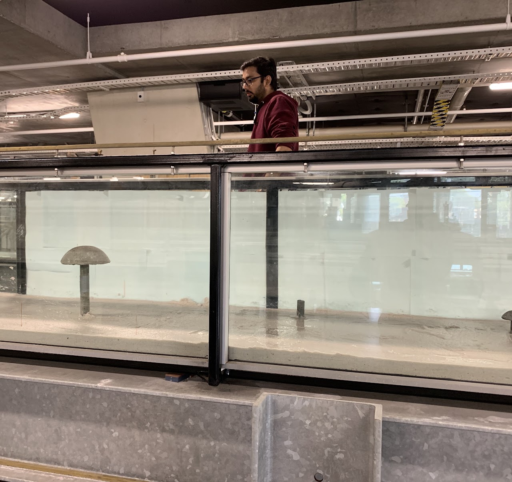
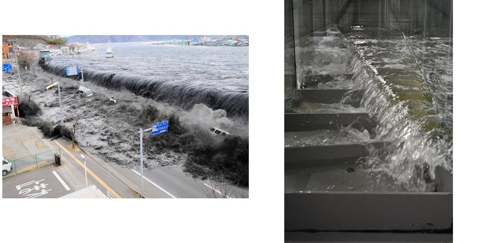
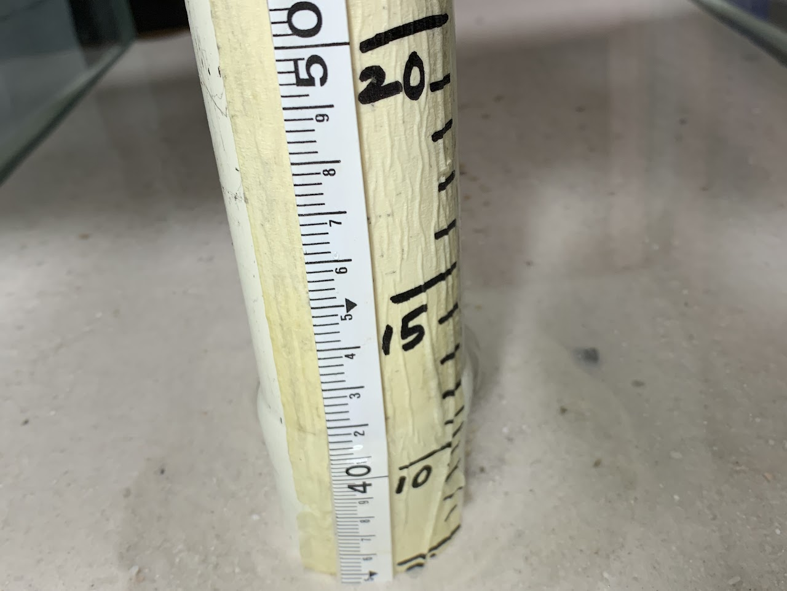
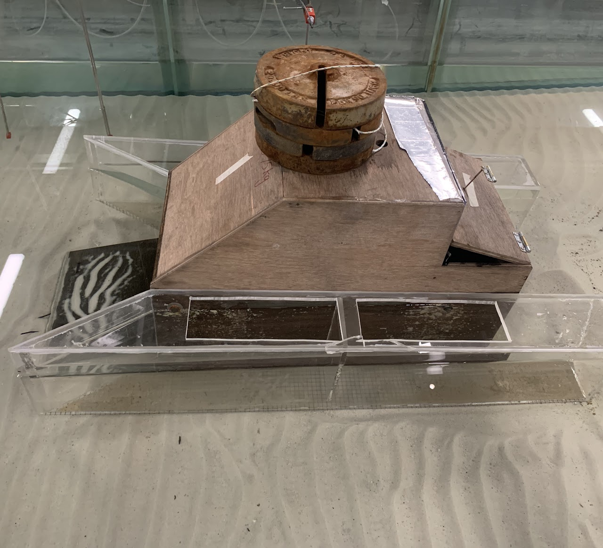
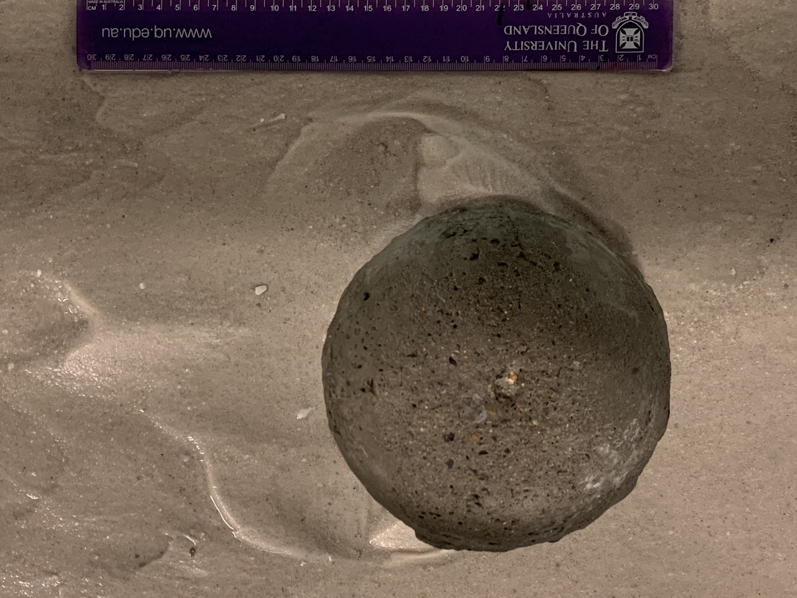
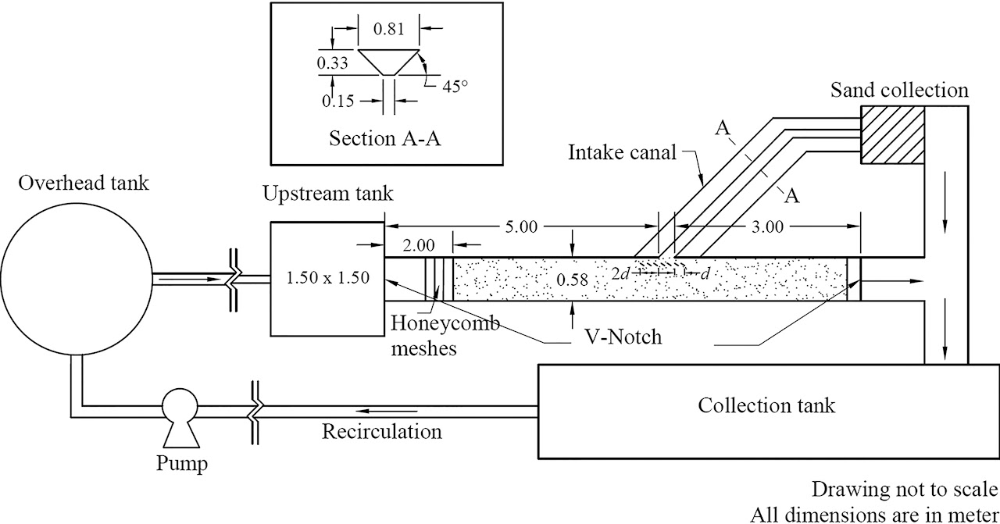
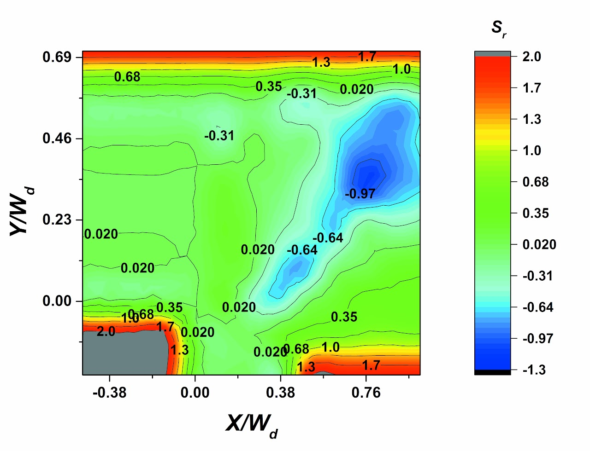
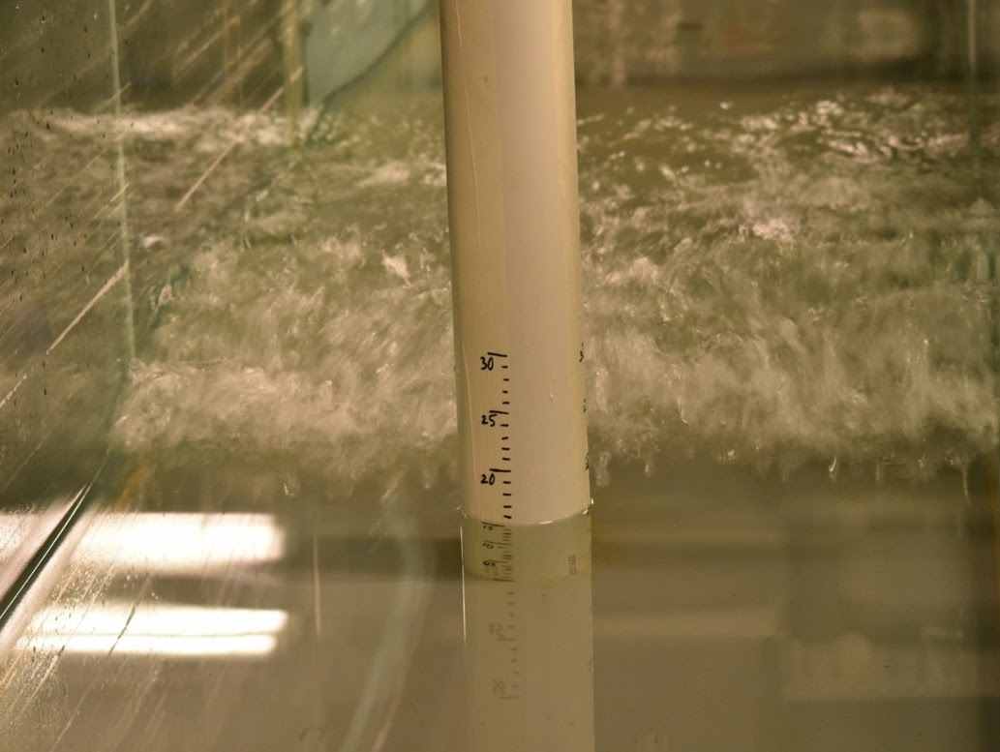

Research
Coastal and Hydraulic engineering
We are actively engaged in research related to various aspects in the field of Coastal and Hydraulic engineering. Our main research interest lies in understanding and solving fluid-sediment-structure dynamics using physical and numerical modelling. We are also very enthusiastic about analytical modelling and its applications. Here you can find a list of projects we are working on or have previously worked on. You can navigate to the project-specific webpages for more details.
- Physical modelling
- Numerical modelling
- Analytical modelling

Explore the research
 Reef restoration
Reef restorationGreat Barrier Reef restoration
This is an exciting project I am currently working on.
Read more
TsunamiTsunami impacts in coastal rivers
Tsunami propagation and inundation are serious problems for communities built along coastal rivers.
Read more Tsunami
TsunamiTsunami runup/overtopping
Research is currently underway to understand the protection offered by various defense structures against tsunami.
Read more
ScourScour around bridge piers
Erosion around bridge piers is a widely researched topic in open channel flows.
Read more
ScourScour around wave energy converter device
With the increasing concerns about climate change and its impacts, renewable energy has become an alternative solution for energy production.
Read more
ScourScour around artificial reefs
Artificial reefs are designed for multiple purposes including coastal protection, marine life habitat and to improve wave surfability.
Read more
Sediment transportSediment entry control into intake canals
Intake canals are used to withdraw water from rivers for various purposes.
Read more
Sediment transportSediment transport at river confluences
River confluences are complex sites with strong turbulence, flow mixing and bed erosion.
Read more
VideosMiscellaneous